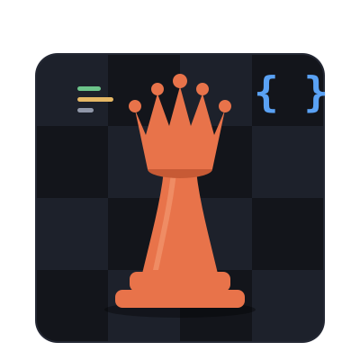
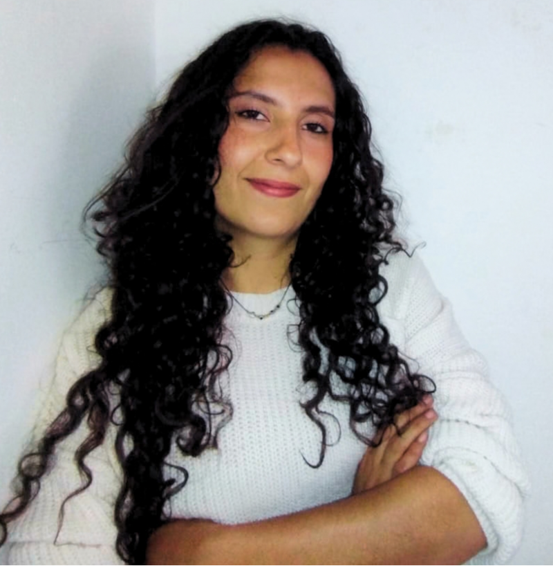
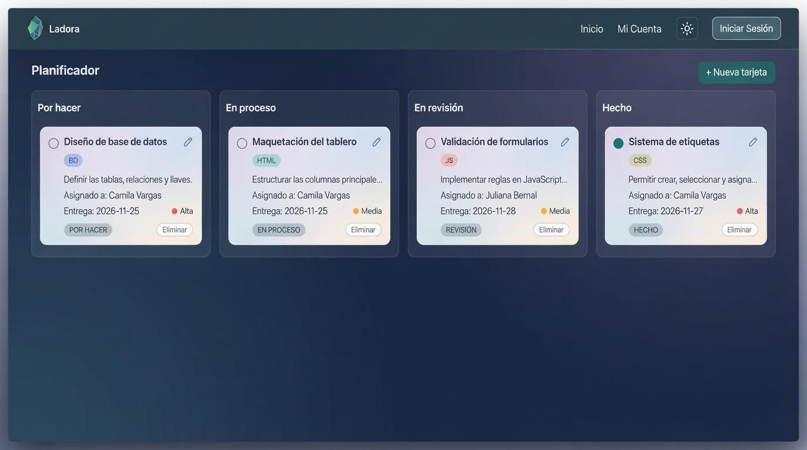
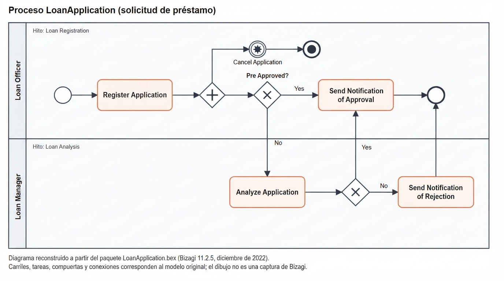
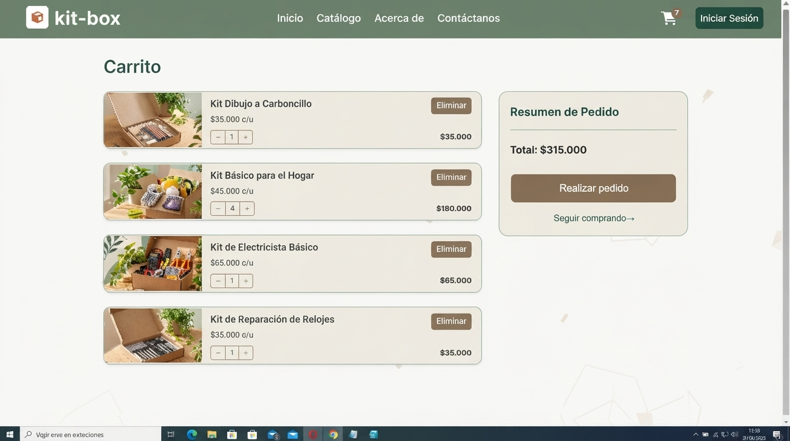

Técnicas
- [Java]
- [Spring Boot]
- [REST APIs]
- [POO]
- [SQL]
- [Bases de Datos]
- [JSON]
- [CRUD]
- [HTML]
- [CSS]
- [JavaScript]
- [Bootstrap]
- [Git]
- [GitHub]
- [Linux]
- [Redes]
- [Servidores]
- [RTMP]
- [Scrum]
- [UiPath]
- [Bizagi]
- [BPMN]
- [Soporte Técnico]
[Programadora Full Stack Java]
[De los planos industriales a las APIs REST: ingeniería con lógica de principio a fin]


[Con una base sólida en Electromecánica, he evolucionado para especializarme en soluciones backend robustas]
Vengo del mundo industrial: estudié Mantenimiento Electromecánico, trabajé con servidores, redes y estudios de transmisión en vivo, y hoy me formo como desarrolladora Full Stack Java en Generation Colombia. Después de conocer el hardware y el software industrial quise cerrar el círculo a través del desarrollo: me apasiona entender un sistema completo y cómo se complementan sus partes. Es un interés que tengo desde niña.
Busco incorporarme a un equipo de desarrollo dinámico, donde el aprendizaje sea constante. Me encantaría trabajar con Spring Boot, aunque no es una exigencia.
Juego ajedrez desde niña, y se nota cuando programo: el ajedrez me dio concentración, capacidad de análisis y el reconocimiento de patrones en el código. Por eso la reina es la imagen de este portafolio.

Un gestor de tareas común muestra todo junto y abruma. Este planificador usa enfoque Kanban para organizar según la urgencia, con prioridad, etiquetas y columnas que se pueden adaptar, por ejemplo, a SCRUM.

Los procesos manuales de solicitud de créditos tenían errores de redacción y costos de mantenimiento altos. En Bizagi modelé procesos, reglas y entidades, con autenticación y base de datos. En RPA, con Automation Anywhere y UiPath, un bot extrae datos de PDFs, arma el Excel y lo lleva a la base de datos. La eficiencia aumentó un 65 %.

Kit-Box resuelve la frustración de las compras sueltas al empezar algo nuevo (una mascota, una mudanza, dibujar, hacer ejercicio): reúne todo en kits completos. Lo construimos en equipo de 5 bajo SCRUM, rotando los roles cada semana; en mi turno fui Scrum Master. Trabajé en el front y en el backend con JWT: diseñé y desarrollé la vista de administrador y armé el banner responsivo del catálogo.
En mi práctica en Griffith Foods actualicé planos eléctricos y de planta, levanté en AutoCAD el sistema de agua caliente y modelé en 3D sellado y mezcladores. Validar requerimientos de punta a punta es una base que hoy aplico al trabajar por ramas en Git.
Practiqué programación orientada a objetos, interfaces, polimorfismo y clases abstractas. Esa base me permitió retomar Java con rapidez y entender mejor el diseño backend.
Aprendí roles, ceremonias y organización por sprints.
Modelé un proceso de préstamos con BPMN en Bizagi y base de datos en SQL Server Express. Con bots en UiPath y Automation Anywhere automaticé la extracción de PDFs a Excel y base de datos, aumentando la eficiencia un 65 %.
Participé en el montaje de estudios con encoders RTMP, servidores y VLANs, y fui líder de turno en 4 estudios. Diagnosticar fallas en vivo, revisar respaldos y mapear escáneres en JSON afinó mi forma de rastrear errores en los flujos de datos.
Levanto requerimientos, planos y presupuestos de instalaciones eléctricas y de seguridad junto a un colega del SENA. En más de 15 proyectos reduje costos un 10 % con revisiones detalladas e instalé más de 6 sistemas de cámaras con 100 % de cobertura.
Construí backends con Java, Spring Boot y MySQL, además de interfaces con APIs REST, CRUD y localStorage. En equipo desarrollamos Kit-Box (donde fui Scrum Master del Sprint 2 e implementé la vista de administrador y el banner responsivo) y una tienda con carrito para hackathon.
¿Tienes un proyecto o una vacante? Escríbeme y lo conversamos.